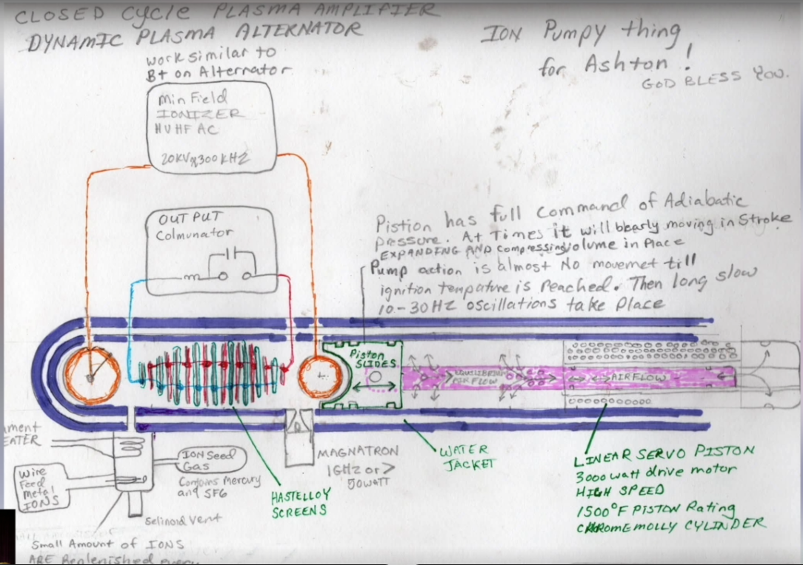

Documented public record
William Neil McCasland was a retired USAF major general, former AFRL commander, SAPOC executive secretary, and senior special-programs official with an unusually deep classified-program background.
Documented facts, contested claims, and the technical trail
This site turns the working research archive into a readable public record. It keeps verified facts separate from inference, shows where the evidence is strongest, and makes the core documents easy to inspect without flattening uncertainty.
Read This First
William Neil McCasland was a retired USAF major general, former AFRL commander, SAPOC executive secretary, and senior special-programs official with an unusually deep classified-program background.
Public reporting places his disappearance on February 27, 2026, near Quail Run Court NE in Albuquerque. The FBI joined the search, but authorities said they had found no evidence of foul play at the time of reporting.
The case linking McCasland to @TMBSpaceships is substantial enough to merit scrutiny, but no primary source in this archive proves account ownership.
@TMBSpaceshipsThree Threads
01
The propulsion side of the archive is a long-form attempt to explain a field-drive system through plasma behavior, local-field geometry, slow-wave references, and the hand-drawn schematic later tied to Ashton Forbes.
The key shift is that the site now treats this as a coherent technical lane without overstating it as proof of a working device or as proof of McCasland authorship.
02
The Yamantau / induced-nuclear posts stand apart because they read like access claims, not hobbyist synthesis. They imply a threat-assessment lane aimed at Forbes rather than a generalized social-media audience.
The archive now treats the xenon framing as technically literate but still unverified from public open-data material.
03
The public search reporting, the 911 timing, and the account's final timestamps create a narrow overlap window that keeps the attribution question alive without solving it.
That overlap is one of the most important reasons the archive is readable as a case file rather than only a speculative dossier.
Core Threads
The strongest evidence is biographical. McCasland's documented career includes the Office of Special Projects, Space-Based Laser, OSD special programs, SAPOC, AFRL, and Harvard Kennedy School's U.S.-Russia Security Program.
Public reporting, the 911 call transcript, and the account's final-post timestamps place the digital activity and disappearance window unusually close together without proving identity.
The schematic is the strongest bridge document in the archive. Forbes says it was sent directly to him in November 2024, and its language aligns tightly with the account's later technical posts.
The post corpus is not random technobabble. It clusters around plasma, MHD, ionization, field geometry, slow-wave systems, ceramics, and unconventional propulsion framing.
The Yamantau and induced-nuclear posts imply an access ceiling beyond normal public speculation. The details remain unverified, but the framing is more specific than ordinary online commentary.
The account explicitly says its errors are purposeful. Across the schematic and posts, the mistakes are usually readable near-misses rather than signs of technical illiteracy.
Why The Schematic Matters
Forbes says on camera that the hand-drawn schematic was sent directly to him in November 2024. That makes it more than a floating internet image. It is a documented bridge between the account and a known public amplifier.
The site therefore treats the drawing as a source object in its own right, not just as aesthetic evidence.
The drawing's language around ionization, adiabatic pressure, materials, and power handling is specific enough that the archive treats it as technically informed even where the underlying concept remains speculative.
The schematic does not prove net energy output, does not prove the device works, and does not by itself prove McCasland drew it. Its value is connective, not magical.
Chronology
Media and Documents

Claim Matrix
| Claim | Assessment | Why it lands there |
|---|
Open Questions
The last reply now appears to sit in the same orbit as the Paul B. exchange, but the exact upstream image or object that triggered the comment has not been recovered.
The site now treats that month as a disclosure sprint, but no single public trigger has been independently identified. That leaves motive compressed but not fully explained.
The archive can now anchor this to a plausible hydrogen-ion resonance scale, but it still has no exact one-to-one public device match.
The monitoring framework is real, but public-facing access does not yet independently verify the specific production-line claim carried by the archive.
Source Trail
Method
The archive prioritizes saved pages, downloaded PDFs, and direct primary-source captures over commentary or paraphrase.
Documented facts, circumstantial links, and interpretive synthesis are separated rather than blended into a single confidence level.
This site is not built to "prove" the attribution theory. It is built to make the evidence legible, inspectable, and falsifiable.